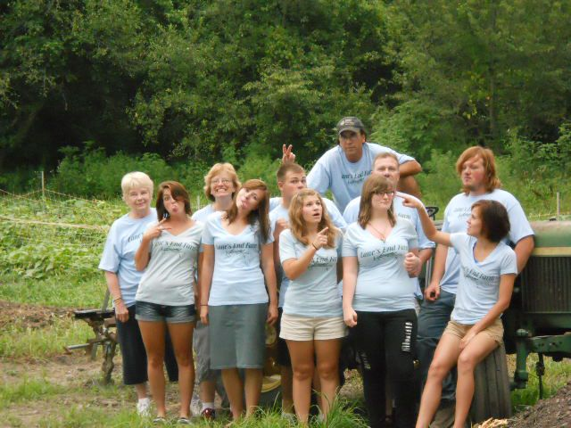
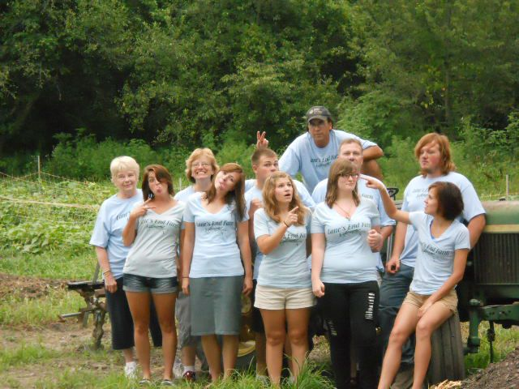
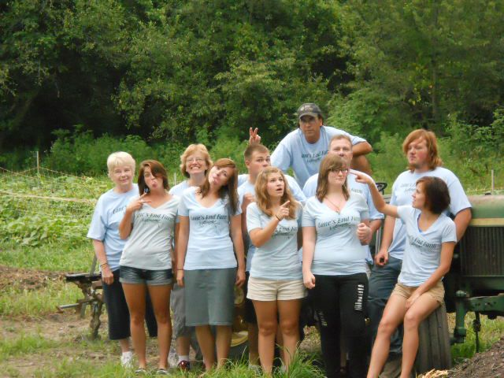
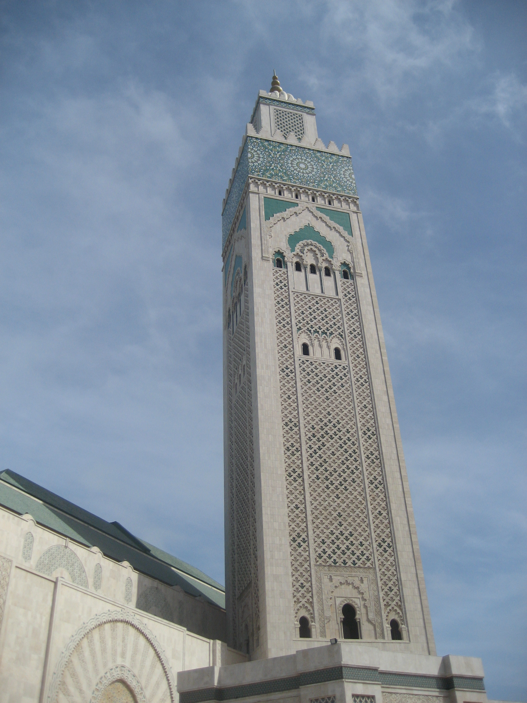
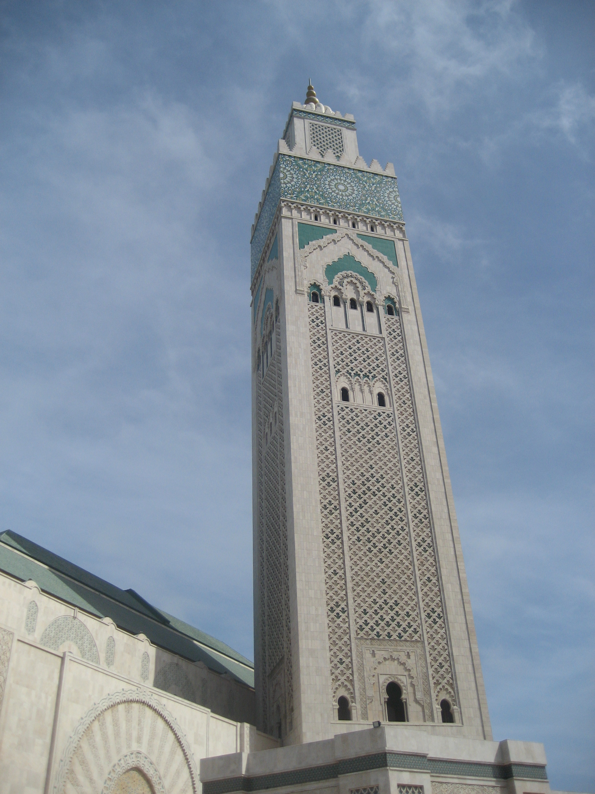
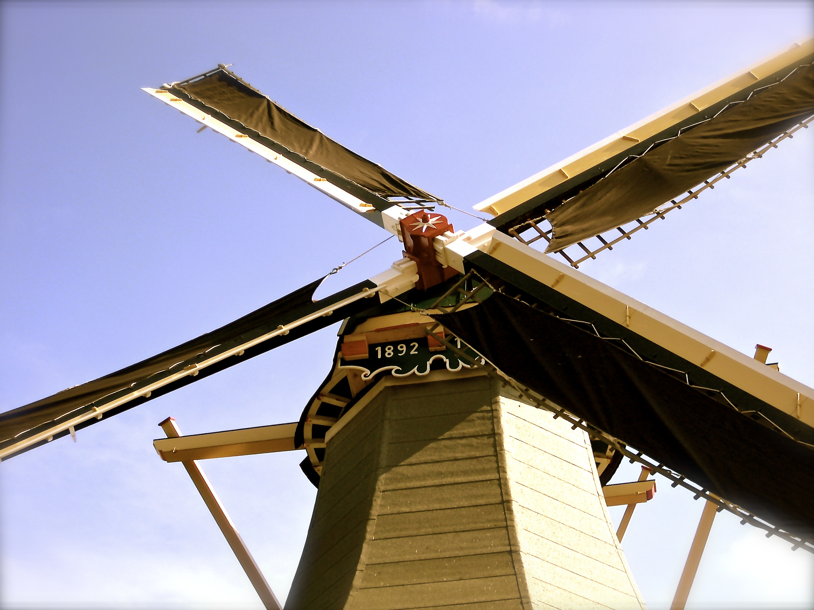
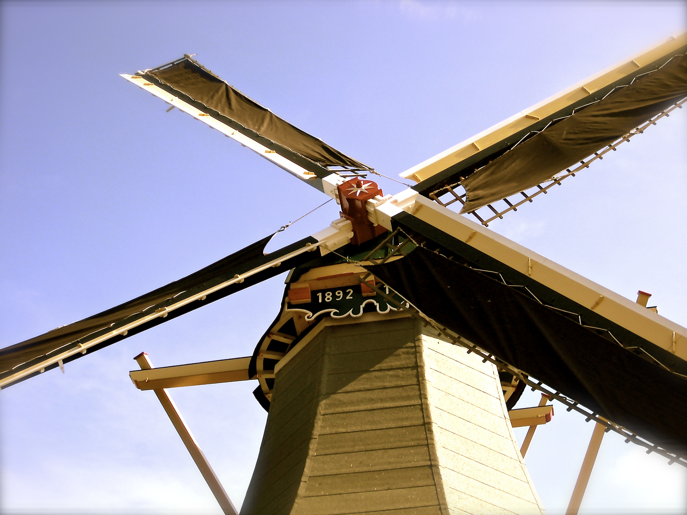

My Hometown
I grew up in Crown Point, IN, ~40 miles SE of Chicago. One of my favorite pastimes is hanging out with my family on their 20 acre organic farm.
 

I grew up in Crown Point, IN, ~40 miles SE of Chicago. One of my favorite pastimes is hanging out with my family on their 20 acre organic farm.

I love to explore the world and experience different cultures.
 

 

In my free time, I love to explore Colorado and the Southwest. I love biking of all sorts, hiking, camping, and generally being outdoors.